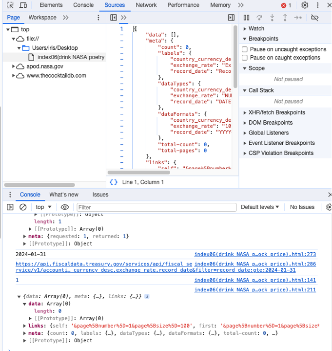
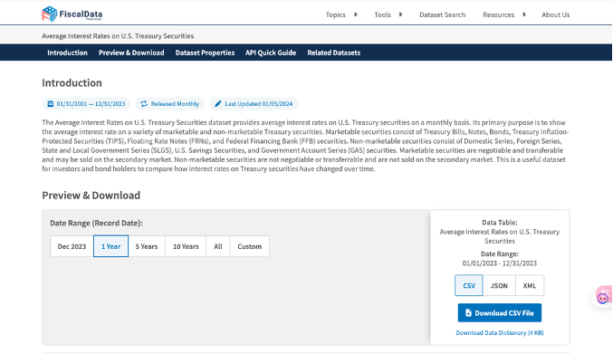
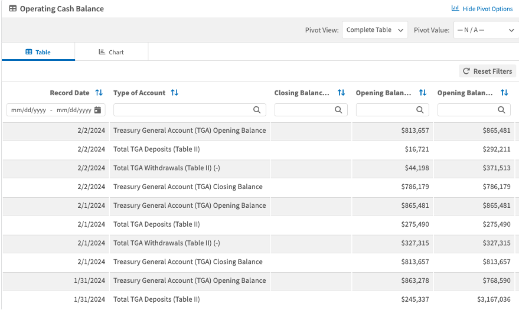

The project tries to express "Sipping wine, reciting verse, gazing at the starry sky, yet mindful of six pennies passing by, broadening horizons"
https://www.thecocktaildb.com/api.php.
https://poetrydb.org/index.html.
https://fiscaldata.treasury.gov/.
https://github.com/yuliniris/creative-tech-4/tree/main/project01.
file name: index09
startButton.addEventListener("click", fetchCocktailData)
let a = new Date(drink.dateModified)
let randomMonthOffset = Math.floor(Math.random() * (-2 - (-6) + 1)) - 6
let adjustedMonth = a.getUTCMonth() + 1 + randomMonthOffset
let dataForNASAAPI = `${a.getUTCFullYear()}-${adjustedMonth.toString().padStart(2, '0')}-${a.getUTCDate().toString().padStart(2, '0')}`
let appendNASAData = (data) => {
console.log(data)
let picTitle = data.title
let imgURL = data.url
let picHeader = document.createElement('h3')
picHeader.innerText = picTitle
NASAsection.appendChild(picHeader)
let nasaImg = document.createElement('img')
nasaImg.src = imgURL
NASAsection.appendChild(nasaImg)
fetchPoetryAfterNASA()
}
let fetchPoetryAfterNASA = () => {
fetchPoetryDB()
}
let stockSymbols
function searchStock(params) {
stockSymbols = document.getElementById('stockInput').value
console.log('Stock Symbol:', stockSymbols)
if (stockSymbols.trim() !== '') {
fetchstockData()
}
}
let recordDate = new Date(lastTradeTime).toISOString().split('T')[0]
console.log(recordDate)
fetchfiscalData(recordDate)
fetchtheNews(recordDate)
It cannot get data from fiscal API. First, I used the endpoint of ‘average interest rate’, and it showed no data. Then, I checked the website, and it showed the latest data is 12/31/2023, whereas the value of ‘recordData’ is 01/31/2024.
Therefore, I changed to the endpoint of ‘daily treasury statement: short-term cash investment’, and it updates the data in time. But it response no data, which seems to be inconsistent with the web.
  There are several steps to build a digital chain mechanics system.
First, think about the digital actions, like sending emails, posting on social media, interacting with APIs, and so on.
Second, define the triggers and corresponding actions, and select the programming languages.
Third, set up the workflow and test each action.
Fourth, test the entire chain system, and do optimization of performance.
Structure and unstructured numerical data, images, texts, and so on. During the projects, I noticed the sentiment analysis API, and I plan to try it later.
If the mechanics of triggers work different from our understanding, the results may be unexpected. also, combining other technologies may results in unexpected outcomes, like natural language processing, cloud computing with Internet of Things platforms.
I use four kinds of triggers: click button, date, input box, and get image content.
And, I receive four kinds of results: image, text, structure data, and combination of text, image, links.